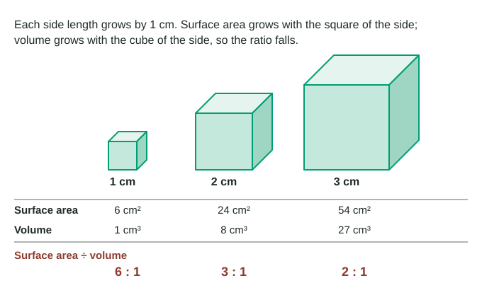

Most cells are tiny: a typical animal cell is 10 to 30 µm across, so roughly 15 to 40 of them would fit side by side across the period at the end of this sentence. Large organisms are not built from larger cells; they are built from more cells. This page explains why, using one idea from geometry, and then uses the same idea to explain why small animals burn through food so fast.
Diffusion: how materials spread
Oxygen, carbon dioxide, nutrients and wastes move into, out of and around a cell largely by diffusion. Particles in a liquid or gas are always moving at random. Where they are crowded, more of them happen to wander away than wander in, so overall they spread from where they are more concentrated to where they are less concentrated. A difference in concentration between two places is a concentration gradient, and diffusion moves particles down it. The cell spends no energy on diffusion; the particles' own motion does the work.
Diffusion has one big weakness: it is fast over tiny distances and painfully slow over large ones. Oxygen crosses a few micrometers of cell in a fraction of a second, but it would take hours to diffuse a few centimeters. So a cell works only if no part of it is far from the surface.
Surface area and volume
A cell takes in what it needs and gets rid of wastes across its surface, the cell membrane. But every bit of its volume uses up materials and makes wastes. So the question is: how much surface does the cell have for each unit of volume it must serve? That is the surface area-to-volume ratio (surface area ÷ volume).
Look at what happens as a cube grows (Figure 1).

| Shape | Surface area | Volume | Surface area ÷ volume |
|---|---|---|---|
| Cube, side s | 6s² | s³ | 6 ÷ s |
| Sphere, radius r | 4πr² | 4/3 πr³ | 3 ÷ r |
| Cylinder, radius r, height h | 2πrh + 2πr² | πr²h | depends on both r and h |
The pattern is always the same. Surface area grows with the square of size and volume with the cube, so when you double the size of any shape, surface area goes up 4 times and volume 8 times. The ratio halves. Bigger means less surface for each unit of volume.
Worked example: a growing spherical cell. A cell has a radius of 5 µm. What is its surface area ÷ volume, and what happens when the radius doubles to 10 µm?
Step 1. Surface area = 4πr² = 4 × 3.14 × 5² = 314 µm².
Step 2. Volume = 4/3 πr³ = 4/3 × 3.14 × 5³ = 524 µm³.
Step 3. Ratio = 314 ÷ 524 = 0.60 µm⁻¹ (per µm). Check: for a sphere the ratio is 3 ÷ r = 3 ÷ 5 = 0.6.
Step 4. At r = 10 µm the ratio is 3 ÷ 10 = 0.30 µm⁻¹, half as much. Each square micrometer of membrane now has to supply twice as much cell.
Why cells stay small
Put the two ideas together. As a cell grows, its volume (its demand) outgrows its surface (its supply), and its center gets farther from the surface, where diffusion is slow. Past a certain size, materials cannot get in and wastes cannot get out fast enough. That is the main limit on cell size.
The classic way to see this is with agar cubes. Agar is dyed with an indicator that is pink when basic and turns clear in acid. Cubes of different sizes are soaked in vinegar for the same time. The acid diffuses in the same distance, about 0.4 cm in 10 minutes, from every face of every cube. In a 1 cm cube that clears almost everything. In a 3 cm cube, whose center is 1.5 cm from any face, most of the inside stays pink.
Worked example: how much of a cube did the acid reach? In 10 minutes, acid cleared 0.4 cm in from each face of a 2 cm cube.
Step 1. The pink core is a smaller cube with side 2 − 0.4 − 0.4 = 1.2 cm, so its volume is 1.2³ = 1.73 cm³.
Step 2. The whole cube is 2³ = 8 cm³, so the acid reached 8 − 1.73 = 6.27 cm³.
Step 3. Share reached = 6.27 ÷ 8 × 100 = 78%. For a 1 cm cube the answer is over 99%; for a 3 cm cube, about 61%.
Shape matters as much as size. A flat slab 0.5 cm thick with the same volume as the 2 cm cube clears completely in the same 10 minutes, because no point inside it is more than 0.25 cm from a face. Thin, flat or long shapes keep the ratio high even when the volume is large. Many cells use this trick: red blood cells are thin disks and nerve cells are long and slender.
Exchange surfaces
Multicellular organisms need to move huge amounts of material across a few surfaces: oxygen in the lungs, food molecules in the gut, water and minerals in the roots. Each of these exchange surfaces is thin and deeply folded, adding enormous area without adding much volume.
| Surface | Where | What it exchanges | How it adds surface |
|---|---|---|---|
| Root hairs | Outer cells of young roots | Water and minerals in | Long, thin outgrowths of single cells |
| Villi and microvilli | Lining of the small intestine | Digested food molecules in | Finger-like folds (villi) covered in tiny membrane folds (microvilli) |
| Alveoli | Lungs | Oxygen in, carbon dioxide out | Hundreds of millions of tiny air sacs with very thin walls |
These features are adaptations: inherited features that help organisms survive and reproduce where they live. When disease destroys them, exchange suffers. In emphysema the walls between alveoli break down, so many small sacs merge into fewer large ones; the lungs still hold air, but there is much less surface to take up oxygen.
Body size, heat and metabolic rate
The same geometry works for whole animals. Heat, like materials, leaves a body through its surface. Mammals and birds are endotherms: they keep warm mainly with heat released by their own cellular respiration. Lizards, fish and frogs are ectotherms: their body temperature follows their surroundings.
A small endotherm has a lot of surface for its volume, so it loses heat fast for its size. To stay warm, each gram of its body must burn fuel faster than each gram of a large animal. Biologists measure this as metabolic rate, often as oxygen used per gram of body mass per hour. A resting shrew uses about 7.4 mL of oxygen per gram per hour; a resting elephant about 0.07, roughly a hundred times less.
Watch the units. Per gram, the elephant uses far less oxygen than the shrew. Per animal, it uses far more: 0.07 mL per g per h × 3,800,000 g ≈ 266,000 mL per hour, against the shrew's 7.4 × 4 = 29.6 mL per hour. Always check whether a graph shows totals or values per gram before you compare animals.
The pattern explains several things you can observe. Small mammals and birds must eat almost constantly. Animals huddle on cold nights, acting together like one larger body with less exposed surface. African elephants, huge and with little surface for their volume, flap large thin ears full of blood vessels to shed heat. Ectotherms of the same size as a mouse use far less oxygen per gram, because they do not spend fuel keeping warm.